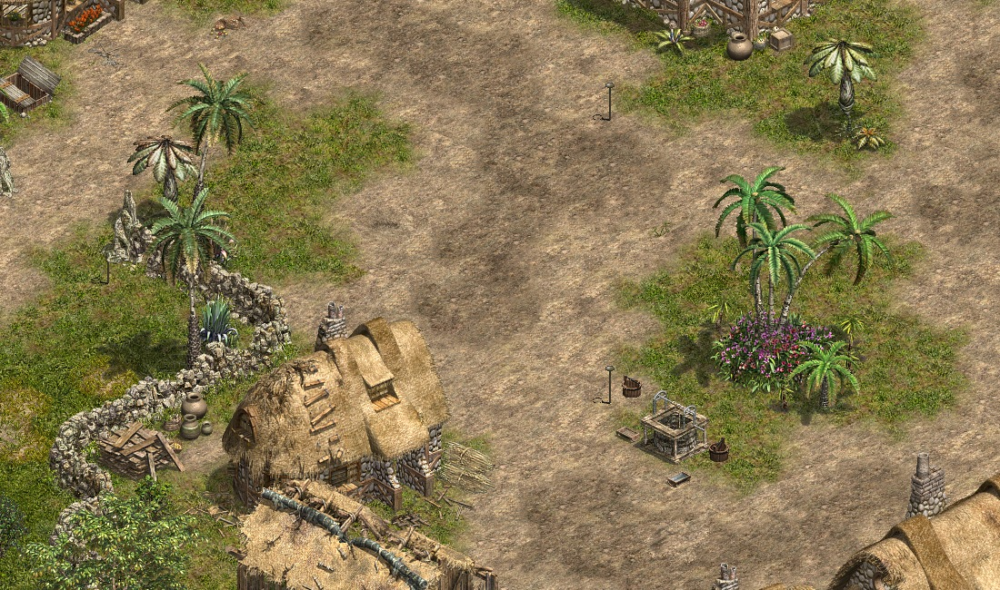

<!doctype html><html lang="zh-Hant"><meta charset="utf-8"><meta name="viewport" content="width=device-width,initial-scale=1,viewport-fit=cover"><link rel="stylesheet" href="mobile.css"><link rel="stylesheet" href="data/entry-screens.css?v=20261105-clean17"><link rel="stylesheet" href="data/character-creation.css?v=20261105-clean17"><link rel="stylesheet" href="data/game-stage.css?v=layout-fix"><link rel="stylesheet" href="data/reference-menu.css?v=1"><link rel="stylesheet" href="data/reference-skin.css?v=1"><link rel="stylesheet" href="data/game-catalog.css?v=wuhun-phantoms1"><title>天堂網頁版｜說話之島</title><style>
*{box-sizing:border-box}body{margin:0;background:#101a19;color:#eef2df;font:15px system-ui}button,select{font:inherit;color:inherit}button{cursor:pointer;touch-action:manipulation}button:focus-visible,select:focus-visible{outline:3px solid #f8d48c}header{height:68px;display:flex;align-items:center;justify-content:space-between;padding:0 24px;background:#162320;border-bottom:1px solid #ffffff18}h1{font-size:19px;margin:0;letter-spacing:3px}small{color:#acbbab;font-size:12px}.pill{border:1px solid #708071;border-radius:30px;padding:6px 12px;font-size:12px}.game{height:calc(100dvh - 68px);min-height:410px;position:relative;overflow:hidden;background:radial-gradient(ellipse at 50% 45%,#667259 0,#344d3e 40%,#21382f 75%)}.grid{position:absolute;inset:0;opacity:.18;background-image:linear-gradient(30deg,transparent 49.7%,#b8c3a2 50%,transparent 50.3%),linear-gradient(150deg,transparent 49.7%,#b8c3a2 50%,transparent 50.3%);background-size:100px 58px}.path{position:absolute;left:38%;top:-20%;width:18%;height:145%;background:#c5b48a25;transform:rotate(35deg);border-left:2px solid #d0c79c15;border-right:2px solid #d0c79c15}.hud{position:absolute;top:18px;left:20px;width:240px;background:#12231de6;padding:14px;border:1px solid #a2b29340;border-radius:16px}.row{display:flex;justify-content:space-between;align-items:center;gap:10px}.portrait{width:42px;height:42px;border-radius:12px;background:#bdb595;color:#26392d;display:grid;place-items:center;font-size:23px}.bar{height:8px;background:#ffffff15;border-radius:8px;margin-top:8px;overflow:hidden}.bar i{display:block;height:100%;background:#b1c786;width:78%}.bar.mana i{background:#79afc9;width:64%}.nav{position:absolute;right:18px;top:18px;display:flex;gap:8px}.nav button,.panel button{background:#172a24ed;border:1px solid #a2b29355;padding:12px 16px;border-radius:12px;min-height:48px}.location{position:absolute;top:92px;right:22px;text-align:right}.location strong{font-size:22px;letter-spacing:4px}.location small{display:block;margin-top:5px}.actor{position:absolute;left:50%;top:48%;transform:translate(-50%,-50%);text-align:center;transition:left .12s,top .12s}.actor .body{margin:8px auto;width:38px;height:56px;border-radius:15px 15px 10px 10px;background:linear-gradient(90deg,#a8b7a5,#e2e0be,#8eaa99);box-shadow:0 18px 12px #101a1977;position:relative}.body:before{content:'';position:absolute;width:22px;height:22px;background:#d1ba8c;border:5px solid #657b71;border-radius:50%;top:-16px;left:8px}.body:after{content:'';position:absolute;width:5px;height:48px;background:#e1d8ad;right:-12px;top:2px;transform:rotate(20deg)}.actor small{background:#13271ece;border-radius:20px;padding:4px 10px;color:#e1e8cc}.note{position:absolute;top:47%;left:15%;font-size:12px;color:#d4dfc1a0;max-width:120px;line-height:1.8}.bottom{position:absolute;bottom:22px;left:22px;right:22px;display:flex;align-items:flex-end;justify-content:space-between;gap:12px}.pad{display:grid;grid-template:repeat(3,45px)/repeat(3,45px);gap:4px;background:#14291f99;padding:9px;border-radius:50%}.pad button{border:0;border-radius:50%;background:#e3e8cb19;font-size:22px}.pad button:nth-child(1){grid-area:1/2}.pad button:nth-child(2){grid-area:2/1}.pad button:nth-child(3){grid-area:2/3}.pad button:nth-child(4){grid-area:3/2}.actions{display:flex;align-items:flex-end;gap:10px}.skill{width:66px;height:66px;background:#182b25e8;border:1px solid #aebd8a88;border-radius:20px;font-size:22px}.skill span,.attack span{display:block;font-size:12px;margin-top:4px}.attack{height:100px;width:100px;border-radius:50%;border:2px solid #e8d5a0;background:#c7b37c;color:#203127;font-size:30px;box-shadow:0 4px 30px #0004}.log{position:absolute;left:205px;bottom:30px;font-size:12px;color:#d5dfc8;max-width:260px;line-height:1.8}.toast{position:absolute;left:50%;top:25%;transform:translateX(-50%);background:#10241fed;padding:12px 22px;border:1px solid #b2c19366;border-radius:40px;opacity:0;transition:opacity .2s;pointer-events:none;white-space:nowrap}.panel{position:absolute;inset:12% 20%;padding:24px;background:#142620fa;border:1px solid #a9b98b77;border-radius:22px;z-index:4;box-shadow:0 20px 90px #0008;overflow:auto}.panel[hidden]{display:none}.panel h2{margin-top:0;font-size:22px}.slots{display:grid;grid-template-columns:repeat(4,1fr);gap:10px;margin:16px 0}.slot{padding:20px 8px;border:1px solid #ffffff20;border-radius:12px;text-align:center;color:#c3ccb6}.close{float:right}.footer-note{position:absolute;bottom:5px;left:50%;transform:translateX(-50%);font-size:10px;white-space:nowrap;color:#c5d0ba88}select{background:#1d3329;padding:10px;border:1px solid #80916e;border-radius:10px}.pulse{animation:pulse .3s}@keyframes pulse{50%{filter:brightness(2);transform:scale(1.12)}}@media(max-width:650px){header{height:52px;padding:0 14px}h1{font-size:15px}.game{height:calc(100dvh - 52px)}.hud{width:180px;padding:10px;left:10px;top:10px}.nav{top:10px;right:10px}.nav button{padding:10px}.location{top:88px;right:14px}.note{display:none}.panel{inset:8% 5%}.bottom{left:10px;right:10px;bottom:22px}.log{left:15px;bottom:190px;max-width:180px}.skill{width:54px;height:58px}.attack{height:82px;width:82px}.actions{gap:5px}.pill{font-size:10px}.pad{grid-template:repeat(3,38px)/repeat(3,38px)}.slots{grid-template-columns:repeat(2,1fr)}}
</style><link rel="stylesheet" href="data/reference-ui.css?v=20261105-clean17" data-reference-ui><link rel="stylesheet" href="rpg-hud.css" data-hud-style><style>header{display:none!important}.game{height:100dvh!important;min-height:0!important}.grid,.path,#scene-fallback{display:none!important}[hidden]{display:none!important}</style><section id="login-screen" class="entry-screen" aria-label="帳號登入">
  <div class="entry-stage login-stage">
    <form id="login-form" class="login-card">
      <h1 class="entry-title">天堂網頁版</h1>
      <small class="entry-subtitle">說話之島 · 冒險的起點</small>
      <label for="login-account">帳號</label>
      <input id="login-account" autocomplete="username" maxlength="32" required placeholder="輸入測試帳號">
      <label for="login-password">密碼</label>
      <input id="login-password" type="password" autocomplete="off" maxlength="72" required placeholder="輸入測試密碼">
      <button id="login-submit" type="submit" class="entry-primary" disabled>登入</button>
      <p id="login-message" class="entry-message" role="status"></p>
    </form>
    <p class="entry-note">本機流程展示，請使用測試帳密。尚未連接帳號伺服器，不會儲存密碼。</p>
  </div>
</section>
<section id="selection-screen" class="entry-screen" aria-label="選擇人物" hidden>
  <div class="entry-stage select-stage">
    <div class="select-heading"><h1>選擇人物</h1><button id="entry-back" type="button">返回登入</button></div>
    <div id="character-choices" class="character-choices" aria-label="已建立的人物與空欄位"></div>
    <div class="selection-info">
      <div class="selection-options"><div class="selection-name"><strong id="entry-name">尚未建立角色</strong><small id="entry-gender">請先建立角色</small></div><button id="entry-new" type="button">建立角色</button></div>
      <div class="selection-stats"><div><span>職業</span><strong id="entry-class">—</strong></div><div><span>等級</span><strong id="entry-level">—</strong></div><div><span>生命／魔力</span><strong id="entry-health">—</strong></div><div><span>地區</span><strong>說話之島</strong></div></div>
      <p id="entry-attributes" class="selected-attributes"></p>
      <p id="selection-message" class="select-message" role="status">目前沒有角色，請先建立角色。</p>
      <div class="selection-bottom"><small>角色只儲存在目前瀏覽器，尚未連接正式帳號伺服器。</small></div>
    </div>
  </div>
</section>

<section id="creation-screen" class="entry-screen" aria-label="建立角色" hidden>
  <div class="entry-stage creation-stage">
    <div class="creation-heading"><h1>建立角色</h1><button id="creation-back" type="button">返回選角</button></div>
    <div class="creation-layout">
      <div class="creation-preview">
        
        <div id="creation-classes" class="creation-classes" aria-label="選擇職業"></div>
        <h2 id="creation-class-title">騎士</h2><p id="creation-intro"></p>
      </div>
      <form id="creation-form" class="creation-form">
        <label for="creation-name">角色名稱<input id="creation-name" maxlength="12" autocomplete="off" required placeholder="輸入角色名稱"></label>
        <div class="creation-genders"><button id="creation-male" type="button" aria-pressed="true">男性</button><button id="creation-female" type="button" aria-pressed="false">女性</button></div>
        <div class="creation-points"><span>剩餘配點</span><strong id="creation-remaining">4</strong><span id="creation-total">能力合計 71 / 75</span></div>
        <div id="creation-stats" class="creation-stats" aria-label="手動能力配點"></div>
        <p id="creation-vitals" class="creation-vitals"></p>
        <p class="creation-rule">請分配完所有點數。能力不能低於職業初始值。</p>
        <p id="creation-message" class="entry-message" role="status"></p>
        <div class="creation-actions"><button id="creation-reset" type="button">重置配點</button><button id="creation-submit" type="submit" disabled>建立角色</button></div>
      </form>
    </div>
  </div>
</section>
<header><div><h1>冒險手札 <small>TOUCH EDITION</small></h1></div><span class="pill">介面原型 · 離線展示</span></header><main class="game" inert><style>.grid,.path{display:none!important}</style><div class="grid"></div><div class="path"></div><section class="hud"><div class="row"><div class="portrait">♜</div><div><strong id="className">騎士</strong><br><small>Lv. 1　初次冒險</small></div><button class="pill" style="background:transparent" id="roles">切換</button></div><div class="bar"><i id="hp"></i></div><div class="bar mana"><i id="mp"></i></div><div class="row" style="margin-top:6px"><small id="hpText">HP 78 / 100</small><small id="mpText">MP 64 / 100</small></div></section><nav class="nav"><button data-panel="bag">背包</button><button data-panel="settings">設定</button></nav><div class="location"><small>探索區域 / 01</small><strong>新手之境</strong><small>場景與角色為介面佔位示意</small></div><div class="note">讓畫面留給冒險。<br>常用操作，拇指就能抵達。</div><div class="actor" id="actor" hidden><small id="actorName">冒險者 · 騎士</small><div class="body"></div></div><div class="toast" role="status" id="toast"></div><div class="bottom"><div class="pad" aria-label="移動方向"><button data-move="0,-1" aria-label="向上">↑</button><button data-move="-1,0" aria-label="向左">←</button><button data-move="1,0" aria-label="向右">→</button><button data-move="0,1" aria-label="向下">↓</button></div><div class="actions"><button class="skill" id="heal">✚<span>藥水 <b id="potions">10</b></span></button><button class="skill" id="magic">✧<span>技能</span></button><button class="attack" id="attack">⚔<span>攻擊</span></button></div></div><div class="log" id="log">歡迎來到手機介面展示。<br>方向鍵可移動示意角色；尚未連接遊戲。</div><div class="footer-note">原始遊戲素材待解析接入 · 當前操作僅為本機示範</div><section class="panel" id="panel" hidden><button class="close" id="close">關閉 ✕</button><div id="panelContent"></div></section></main><script defer src="data/core.js?v=20261105-clean17"></script>
<script defer src="data/sprite-movement-data.js?v=20261105-clean17"></script><script defer src="data/movement-config.js?v=attack-priority1"></script><script defer src="data/player.js?v=class-stats1"></script><script defer src="data/player-gear-recovery.js?v=1"></script><script defer src="data/player-class-stats.js?v=1"></script>
<script defer src="data/notifications.js?v=menu1"></script>
<script defer src="data/panels.js?v=menu1"></script>
<script defer src="data/combat.js?v=attack-priority1"></script>
<script defer src="data/input.js?v=20261105-clean17"></script>
<script defer src="data/talking-island-data.js?v=20261105-clean17"></script>
<script defer src="data/island-scene-data.js?v=20261105-clean17"></script>
<script defer src="data/scene-renderer.js?v=responsive-step1"></script>
<script defer src="data/navigation.js?v=arrow-cursor1"></script><script defer src="data/mobile-controls.js?v=responsive-step1"></script>
<script defer src="data/rpg-hud.js?v=20261105-clean17"></script>
<script defer src="data/character-data.js?v=20261105-clean17"></script><script defer src="data/character-action-data.js?v=20261105-clean17"></script>
<script defer src="data/character-renderer.js?v=layout-fix"></script>
<script defer src="data/character-motion.js?v=20261105-clean17"></script>
<script defer src="data/character-actions.js?v=attack-priority1"></script><script defer src="data/class-creation-data.js?v=20261105-clean17"></script><script defer src="data/character-store.js?v=20261105-clean17"></script><script defer src="data/character-creation.js?v=20261105-clean17"></script><script defer src="data/entry-flow.js?v=double-select1"></script>
<script defer src="data/interface-catalog.js?v=client-pictures1"></script>
<script defer src="data/item-use-data.js?v=20261105-clean17"></script>
<script defer src="data/owned-inventory.js?v=weapon-morph1"></script>
<script defer src="data/classic-panels.js?v=client-pictures1"></script>
<script defer src="data/reference-hud.js?v=quiet-auto1"></script><script defer src="data/reference-menu.js?v=layout-fix"></script><script defer src="data/reference-skin.js?v=1"></script><script defer src="data/game-catalog-data.js?v=sys1"></script><script defer src="data/transform-cards-data.js?v=original-polys1"></script><script defer src="data/monster-action-index.js?v=1"></script><script defer src="data/morph-weapon-data.js?v=1"></script><script defer src="data/death-knight-layer-data.js?v=1"></script><script defer src="data/death-knight-original-data.js?v=1"></script><script defer src="data/original-polymorph-extra-data.js?v=1"></script><script defer src="data/monster-actions.js?v=wuhun-more1"></script><script defer src="data/transform-cards.js?v=smooth-walk1"></script><script defer src="data/game-catalog.js?v=client-pictures1"></script><script defer src="data/tdj-systems-data.js?v=sys1"></script><script defer src="data/wuhun-boss-loop-data.js?v=1"></script><script defer src="data/wuhun-boss-gesture-data.js?v=1"></script><script defer src="data/wuhun-auto-data.js?v=wuhun-body1"></script><script defer src="data/wuhun-more-effects.js?v=1"></script><script defer src="data/wuhun-auto-cast.js?v=long-pause1"></script><script defer src="data/tdj-systems.js?v=client-pictures1"></script></html>
